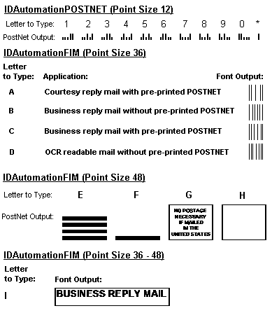

IDautomation.com
POSTNET Font Advantage Package DEMO
|
A license is required for each computer this
software is installed on;
this software may only be used according to the
License Agreement.
Demo versions of this software may be used for
evaluation purposes only |
NOTE:
We recommend you use our
Font Tools to automatically perform the required check character
calculations on barcode fonts and ensure the printed barcode will scan properly. Although the POSTNET and PLANET barcode fonts are scaleable, they only meet USPS requirements when they are printed with a font size of 12. The OCR-A font should be printed at 9 points and the
Code 128 barcode font should be printed at the font size of 16. These sample
fonts should only be
used for testing and evaluation purposes because they do
not contain the number "5" and they do not contain any
of the FIM bar codes or symbols. In addition, the OCR-A font is
missing some characters and Code 128 font contains the text "DEMO" in some of the characters which
can cause scan errors. For testing purposes, a successful scan can be
obtained by scanning the lower 25% of the barcode that does not contain
any "DEMO" text on it. To obtain the fully functional POSTNET bar code font
package containing all symbols, you may
order now.
INDEX:
Our POSTNET Font Advantage Package is much more than just
a few fonts. This package contains several different font versions in 6
different font formats. You also receive font tools, macros and source code to
help you integrate the fonts into your applications. Details of the package are
as follows:
- Font Tools Provided - for easy integration into applications, we provide
several
font
tools that are free to use with our fonts. Our font tools
automatically format the start, stop and check characters to the barcode
font. The following tools are available:
- Multiple Postnet Fonts Provided - the POSTNET (POSTal Numeric Encoding Technique) barcode
is a special barcode developed by the US Post Office
to encode zip code information. POSTNET bar codes on US
mail improves the speed, accuracy and delivery of
mail. Some US Post Offices also offer a discount for
sending bulk mail when you use the Postnet barcode font. Multiple
versions of this font are provided in this advantage package to support
printers that print darker or lighter than normal. The Postnet font should
be used with our Postnet() function in our
Font Tools
- FIM bar code fonts - the FIM bar code font is included and is used
to sort business reply mail from other mail. For more
information on the FIM bar code fonts, visit the
FIM Barcode Font
information page.
- Planet Fonts Included - the PLANET is a new bar code used to track mail.
Visit
the PLANET Font Site for PLANET information. The Planet font should be
used with our Postnet() function in our
Font Tools
- OCR-A Font Included - the IDAutomationOCRa font should be printed at 9
points for OCR-A size 1 which is 10 CPI. OCR-A size 1 is required for USPS
scanners to automatically read the address when the barcode is unavailable
or not readable.
- USPS Special Services Fonts Included for EAN128 - when printed
at 16 points, the IDAutomationC128L font will produce the exact dimensions
for UCC/EAN Code 128 required by the USPS special services, which is a
height of .75" and an X dimension of .013". For information about
formatting USPS UCC/EAN128 barcodes with our products, refer to the
USPS
portion of the Code 128 FAQ. Our
MS Office Macros
and Crystal
Reports UFL also include the USPS_EAN128
function for easier creation of USPS Special Services bar codes.
- Canada Post Support - when printed at 21 points, the
IDAutomationC128L font will produce the dimensions required by the CANADA
POST, which is a height of 1" and an X dimension of .017".
- Multiple Formats Provided - when you purchase a license for this font, you will receive all versions
in a single ZIP file. The manual is supplied in a file named
"readme" in the ZIP file. The following fonts are included:
- TrueType fonts are
supplied in PC and Macintosh format. The TrueType TTF fonts are
compatible with Macintosh OS X and all versions of Microsoft Windows, including
Pocket PC.
Macintosh formatted MTT TrueType fonts are compatible with Macintosh
System 7.1 and above.
- OpenType OTF
fonts with PostScript outlines are provided. These are compatible with
Windows®, Macintosh OS X and other systems supporting the OpenType
format.
- PostScript Type 1 fonts are supplied in binary,
ASCII and Macintosh Classic MacBinary versions.
- Also included in this package are PCL laserjet soft fonts in 11.4,
12 and 12.6 points.
- With the purchase of a Developer License and 1 year of support and
upgrade protection, we can convert fonts from this package to PCL 4,
Xerox Metacode, XES, FNT, BDF, FON and AFP. More about this is
provided here.
The Developer License also grants you the right to convert our fonts to
other formats as necessary including TrueDoc and OpenType.
- You may also get more information on what
font
types are provided.
- For
the most up to date installation procedures for
other operating systems, please visit our
Technical
Support Site.
NOTE: For the most up to date installation procedures for Windows, Macintosh, UNIX and other operating systems please
visit our FAQ site at http://www.idautomation.com/fonts/fontfaq.html
To install the POSTNET Postal bar code font on Windows® systems:
- Click on Start, select settings and click on Control
Panel.
- Click on Fonts, click on File in your main tool bar, select Install New Font.
- Select the folder where you placed the POSTNET bar code
font.
- The POSTNET font will appear and look like this: IDAutomationPOSTNET
(true type) - select this font and click
on OK.
- Click Start and choose to shut down and restart your
computer.
- The font should be active when you restart your computer.
The following should help you format and place your barcode
properly on printed material:
- When formatting your
barcode, we recommend you use our
Font Tools to automatically perform the required check character
calculations on POSTNET, PLANET and Code 128 barcode
fonts to ensure the printed barcode will scan properly. Manual calculations
are provided here.
- Although the POSTNET and PLANET bar code fonts are scaleable, you should use the font size of 12 when printing them. FIM
symbols should be printed with a font size of 36 as in the example at the
bottom of the page. Interleaved 2 of 5 and Code 128 fonts should be printed
at 20 points for USPS Special Services.
- POSTNET barcodes can be printed as a 5 digit POSTNET bar code, ZIP+4
POSTNET bar code or a Delivery Point Bar Code which is also referred to as
DPBC. If you are in doubt on which method you should use, contact
your local post office for more information.
- The 5 digit POSTNET bar code consists of the start/stop character, 5
digit ZIP code data, check digit and the start/stop character, for a total
of 32 bars.
- The ZIP+4
POSTNET bar code consists of the start/stop character, 9 digit ZIP code
data, check digit and the start/stop character, for a total of 52 bars.
- The DPBC POSTNET bar code consists of the start/stop character, 9
digit ZIP code data, two DPBC
numbers, check digit and the start/stop character, for a total of 62 bars. The two DPBC
numbers are usually the last two digits of the street address, PO Box or
route number. If you are planning on using DPBC, we recommend you
examine chapter 5 of the
USPS Domestic Mail Manual for information on
handling abnormal addresses.
- The POSTNET barcodes must be printed on specific areas of mail, usually
directly below the address. For more information on formatting and placement
of POSTNET bar codes or FIM symbol placement, refer to
Chapter 5 of the USPS document Domestic Mail Manual and
USPS Publication
25 or contact your local post office Automation
Specialist for assistance.
- Before sending your printed barcodes to the post office, we recommend
you find some method of doing a test scan on the barcode or verify it with a
POSTNET Barcode Verifier.
We offer an easy to use
Postnet scanner and verifier that will grade your barcodes with a
quality assurance test and report possible problems. This is an example
of the output we received when scanning a barcode that
was still acceptable to the post office:
>>> PQA from Hand Held
Products <<<
POSTNET: 62 Bars, nominally from 02.54 to 03.05 in. in Width
Bar Sequence: 10011000110011001100010100000111100000110100011000101010011001
[A] (Ok) < Tall Bar Heights: 0.130 in.
[B] (Hi) < Short Bar Heights: 0.058 in.
[A] (Ok) < Bar Widths = 0.021 in.
[A] (Ok) < Inter-Bar Gaps = 0.024 in.
|
Manual check character calculation for POSTNET fonts
|
We recommend you use our
Font Tools to automatically perform the required check character
calculations. However, if you wish to manually calculate the check digit
and add in the start and stop characters, it is not that difficult:
- The start/stop character must be used at the beginning and ending of
every POSTNET barcode. For best performance, the parentheses
are used for start and stop characters; "(" for start and
")" for stop. Start and stop codes are combined for the
"!, *, s, or S" characters.
- The last digit of the printed POSTNET barcode symbol is a check digit.
The check digit is obtained by determining the number that when added to
the sum of all numbers of the data in the POSTNET code will produce a
multiple of 10. For example; the check digit for the POSTNET number
of 33727-1426 is 5 because (3+3+7+2+7+1+4+2+6=35 and 35+5=40) Therefore,
the sum of all POSTNET data including the check digit must be a multiple
of 10. The actual font characters used to print this POSTNET code
would be (3372714265).
- Note, the closing parenthesis character includes extra white space at
the end. If you want to right justify the barcode and do not need this
spacing, use the exclamation character for the stop character instead. For
example: (3372714265!.
- Manual calculations for other barcode fonts are provided on the product
pages of the associated fonts.
The following are specifications for the fonts in
this package:
| Parameter |
Approximate Font Dimensions at 12 points |
USPS Dimension Standards |
| X Dimension (width of bars) |
.017" |
.015" - .025" |
| width of space between bars |
.027" |
.012" - .040" |
| Height of short bar |
.051" |
.040" - .060" |
| Height of tall bar |
.126" |
.115" - .135" |
| Number of bars per inch |
23 |
22 - 24 |
The following are specifications for the OCR-A Fonts:
| Font |
Point Size |
CPI |
ANSI Size |
| IDAutomationOCRa |
9 |
10 |
1 |
The following are specifications for the Code 128 Font
IDAutomationC128L :
| Parameter |
Approximate Font Dimensions at
16
points |
USPS Dimension Standards |
| X Dimension |
.0135" |
.013" - .020" |
| Height of bars |
.75" |
.75" - .80" |
| Parameter |
Approximate Font Dimensions at 21
points |
| X Dimension |
.017" |
| Height of bars |
1" |
Font names in the package and compatible
functions: (click
here to view font names prior to July, 2003)
| Font Name |
Function to use in
Font Tools |
Purpose |
| IDAutomationPOSTNET |
Postnet() |
Postnet font |
| IDAutomationPLANET |
Postnet() |
Planet font |
| IDAutomationOCRa |
na |
OCR-A font |
| IDAutomationC128L |
Code128() or USPS_EAN128() |
Code 128 Font |
| IDAutomationPOSTNETn |
Postnet() |
Postnet font with bars narrowed by 10% |
| IDAutomationPLANETn |
Postnet() |
Planet font with bars narrowed by 10% |
| IDAutomationFIM |
na |
FIM barcode font |
|
POSTNET and FIM
barcode symbols in the fonts:
|

|
Font names used prior to July, 2003
|
| Font Name |
Function to use in
Font Tools |
Purpose |
| AdvPNET |
Postnet() |
Postnet font |
| AdvPLNT |
Postnet() |
Planet font |
| AdvOCR-A |
na |
OCR-A font |
| AdvI25d |
I2of5Mod10() |
Interleaved 2 of 5 font (not used by USPS as of 2005) |
| AdvC128d |
Code128() or USPSss() |
Code 128 Font |
| AdvPNETn |
Postnet() |
Postnet font with bars narrowed by 10% |
| AdvPLNTn |
Postnet() |
Planet font with bars narrowed by 10% |
| AdvFIM |
na |
FIM barcode font |
Report Software Piracy: See our document about how
to identify and report illegal and counterfeit barcode fonts for more
information.
If you have any questions or need assistance, please
contact us.
Copyright © 2000-2005 IDAutomation.com, Inc. IDAutomation and
BizFonts are registered trademarks of IDAutomation.com, Inc. All
other trademarks
mentioned are the property of their respective owners.
|
Over 70% of Fortune 100 companies
use our products to automate their businesses. |